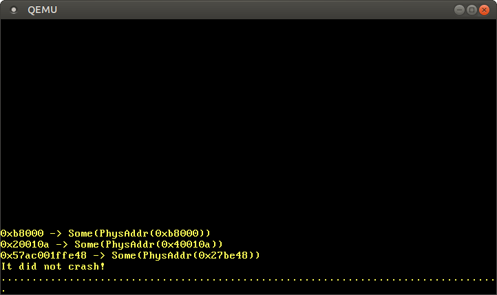
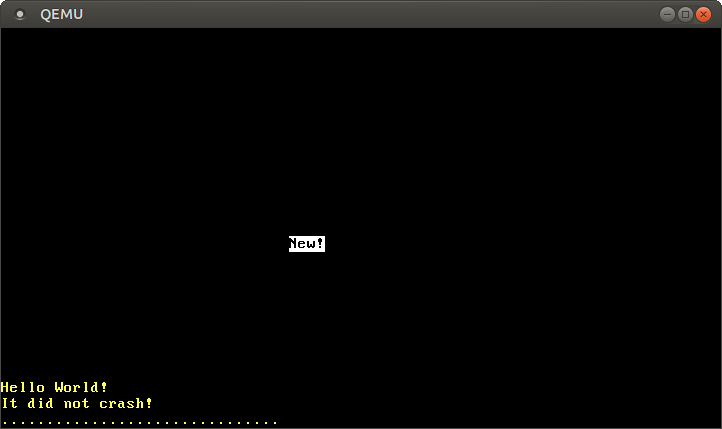

Advanced Paging
This post explains techniques to make the physical page table frames accessible to our kernel. It then uses such a technique to implement a function that translates virtual to physical addresses. It also explains how to create new mappings in the page tables.
This blog is openly developed on GitHub. If you have any problems or questions, please open an issue there. You can also leave comments at the bottom. The complete source code for this post can be found here.
🔗Introduction
In the previous post we learned about the principles of paging and how the 4-level page tables on x86_64 work. We also found out that the bootloader already set up a page table hierarchy for our kernel, which means that our kernel already runs on virtual addresses. This improves safety since illegal memory accesses cause page fault exceptions instead of modifying arbitrary physical memory.
However, it also causes a problem when we try to access the page tables from our kernel because we can’t directly access the physical addresses that are stored in page table entries or the CR3 register. We experienced that problem already at the end of the previous post when we tried to inspect the active page tables.
The next section discusses the problem in detail and provides different approaches to a solution. Afterward, we implement a function that traverses the page table hierarchy in order to translate virtual to physical addresses. Finally, we learn how to create new mappings in the page tables and how to find unused memory frames for creating new page tables.
🔗Dependency Versions
This post requires version 0.3.12 of the bootloader dependency and version 0.5.0 of the x86_64 dependency. You can set the dependency versions in your Cargo.toml:
[dependencies]
bootloader = "0.3.12"
x86_64 = "0.5.0"
🔗Accessing Page Tables
Accessing the page tables from our kernel is not as easy as it may seem. To understand the problem let’s take a look at the example 4-level page table hierarchy of the previous post again:

The important thing here is that each page entry stores the physical address of the next table. This avoids the need to run a translation for these addresses too, which would be bad for performance and could easily cause endless translation loops.
The problem for us is that we can’t directly access physical addresses from our kernel since our kernel also runs on top of virtual addresses. For example when we access address 4 KiB, we access the virtual address 4 KiB, not the physical address 4 KiB where the level 4 page table is stored. When we want to access the physical address 4 KiB, we can only do so through some virtual address that maps to it.
So in order to access page table frames, we need to map some virtual pages to them. There are different ways to create these mappings that all allow us to access arbitrary page table frames:
-
A simple solution is to identity map all page tables:

In this example, we see various identity-mapped page table frames. This way the physical addresses of page tables are also valid virtual addresses so that we can easily access the page tables of all levels starting from the CR3 register.
However, it clutters the virtual address space and makes it more difficult to find continuous memory regions of larger sizes. For example, imagine that we want to create a virtual memory region of size 1000 KiB in the above graphic, e.g. for memory-mapping a file. We can’t start the region at
28 KiBbecause it would collide with the already mapped page at1004 MiB. So we have to look further until we find a large enough unmapped area, for example at1008 KiB. This is a similar fragmentation problem as with segmentation.Equally, it makes it much more difficult to create new page tables, because we need to find physical frames whose corresponding pages aren’t already in use. For example, let’s assume that we reserved the virtual 1000 KiB memory region starting at
1008 KiBfor our memory-mapped file. Now we can’t use any frame with a physical address between1000 KiBand2008 KiBanymore, because we can’t identity map it. -
Alternatively, we could map the page tables frames only temporarily when we need to access them. To be able to create the temporary mappings we only need a single identity-mapped level 1 table:

The level 1 table in this graphic controls the first 2 MiB of the virtual address space. This is because it is reachable by starting at the CR3 register and following the 0th entry in the level 4, level 3, and level 2 page tables. The entry with index
8maps the virtual page at address32 KiBto the physical frame at address32 KiB, thereby identity mapping the level 1 table itself. The graphic shows this identity-mapping by the horizontal arrow at32 KiB.By writing to the identity-mapped level 1 table, our kernel can create up to 511 temporary mappings (512 minus the entry required for the identity mapping). In the above example, the kernel mapped the 0th entry of the level 1 table to the frame with address
24 KiB. This created a temporary mapping of the virtual page at0 KiBto the physical frame of the level 2 page table, indicated by the dashed arrow. Now the kernel can access the level 2 page table by writing to the page starting at0 KiB.The process for accessing an arbitrary page table frame with temporary mappings would be:
- Search for a free entry in the identity-mapped level 1 table.
- Map that entry to the physical frame of the page table that we want to access.
- Access the target frame through the virtual page that maps to the entry.
- Set the entry back to unused thereby removing the temporary mapping again.
This approach keeps the virtual address space clean since it reuses the same 512 virtual pages for creating the mappings. The drawback is that it is a bit cumbersome, especially since a new mapping might require modifications of multiple table levels, which means that we would need to repeat the above process multiple times.
-
While both of the above approaches work, there is a third technique called recursive page tables that combines their advantages: It keeps all page table frames mapped at all times so that no temporary mappings are needed, and also keeps the mapped pages together to avoid fragmentation of the virtual address space. This is the technique that we will use for our implementation, therefore it is described in detail in the following section.
🔗Recursive Page Tables
The idea behind this approach is to map some entry of the level 4 page table to the level 4 table itself. By doing this, we effectively reserve a part of the virtual address space and map all current and future page table frames to that space.
Let’s go through an example to understand how this all works:

The only difference to the example at the beginning of this post is the additional entry at index 511 in the level 4 table, which is mapped to physical frame 4 KiB, the frame of the level 4 table itself.
By letting the CPU follow this entry on a translation, it doesn’t reach a level 3 table, but the same level 4 table again. This is similar to a recursive function that calls itself, therefore this table is called a recursive page table. The important thing is that the CPU assumes that every entry in the level 4 table points to a level 3 table, so it now treats the level 4 table as a level 3 table. This works because tables of all levels have the exact same layout on x86_64.
By following the recursive entry one or multiple times before we start the actual translation, we can effectively shorten the number of levels that the CPU traverses. For example, if we follow the recursive entry once and then proceed to the level 3 table, the CPU thinks that the level 3 table is a level 2 table. Going further, it treats the level 2 table as a level 1 table and the level 1 table as the mapped frame. This means that we can now read and write the level 1 page table because the CPU thinks that it is the mapped frame. The graphic below illustrates the 5 translation steps:

Similarly, we can follow the recursive entry twice before starting the translation to reduce the number of traversed levels to two:

Let’s go through it step by step: First, the CPU follows the recursive entry on the level 4 table and thinks that it reaches a level 3 table. Then it follows the recursive entry again and thinks that it reaches a level 2 table. But in reality, it is still on the level 4 table. When the CPU now follows a different entry, it lands on a level 3 table but thinks it is already on a level 1 table. So while the next entry points at a level 2 table, the CPU thinks that it points to the mapped frame, which allows us to read and write the level 2 table.
Accessing the tables of levels 3 and 4 works in the same way. For accessing the level 3 table, we follow the recursive entry three times, tricking the CPU into thinking it is already on a level 1 table. Then we follow another entry and reach a level 3 table, which the CPU treats as a mapped frame. For accessing the level 4 table itself, we just follow the recursive entry four times until the CPU treats the level 4 table itself as mapped frame (in blue in the graphic below).

It might take some time to wrap your head around the concept, but it works quite well in practice.
🔗Address Calculation
We saw that we can access tables of all levels by following the recursive entry once or multiple times before the actual translation. Since the indexes into the tables of the four levels are derived directly from the virtual address, we need to construct special virtual addresses for this technique. Remember, the page table indexes are derived from the address in the following way:

Let’s assume that we want to access the level 1 page table that maps a specific page. As we learned above, this means that we have to follow the recursive entry one time before continuing with the level 4, level 3, and level 2 indexes. To do that we move each block of the address one block to the right and set the original level 4 index to the index of the recursive entry:

For accessing the level 2 table of that page, we move each index block two blocks to the right and set both the blocks of the original level 4 index and the original level 3 index to the index of the recursive entry:

Accessing the level 3 table works by moving each block three blocks to the right and using the recursive index for the original level 4, level 3, and level 2 address blocks:

Finally, we can access the level 4 table by moving each block four blocks to the right and using the recursive index for all address blocks except for the offset:

We can now calculate virtual addresses for the page tables of all four levels. We can even calculate an address that points exactly to a specific page table entry by multiplying its index by 8, the size of a page table entry.
The table below summarizes the address structure for accessing the different kinds of frames:
| Virtual Address for | Address Structure (octal) |
|---|---|
| Page | 0o_SSSSSS_AAA_BBB_CCC_DDD_EEEE |
| Level 1 Table Entry | 0o_SSSSSS_RRR_AAA_BBB_CCC_DDDD |
| Level 2 Table Entry | 0o_SSSSSS_RRR_RRR_AAA_BBB_CCCC |
| Level 3 Table Entry | 0o_SSSSSS_RRR_RRR_RRR_AAA_BBBB |
| Level 4 Table Entry | 0o_SSSSSS_RRR_RRR_RRR_RRR_AAAA |
Whereas AAA is the level 4 index, BBB the level 3 index, CCC the level 2 index, and DDD the level 1 index of the mapped frame, and EEEE the offset into it. RRR is the index of the recursive entry. When an index (three digits) is transformed to an offset (four digits), it is done by multiplying it by 8 (the size of a page table entry). With this offset, the resulting address directly points to the respective page table entry.
SSSSSS are sign extension bits, which means that they are all copies of bit 47. This is a special requirement for valid addresses on the x86_64 architecture. We explained it in the previous post.
We use octal numbers for representing the addresses since each octal character represents three bits, which allows us to clearly separate the 9-bit indexes of the different page table levels. This isn’t possible with the hexadecimal system where each character represents four bits.
🔗Implementation
After all this theory we can finally start our implementation. Conveniently, the bootloader not only created page tables for our kernel, but it also created a recursive mapping in the last entry of the level 4 table. The bootloader did this because otherwise there would be a chicken or egg problem: We need to access the level 4 table to create a recursive mapping, but we can’t access it without some kind of mapping.
We already used this recursive mapping at the end of the previous post to access the level 4 table. We did this through the hardcoded address 0xffff_ffff_ffff_f000. When we convert this address to octal and compare it with the above table, we can see that it exactly follows the structure of a level 4 table entry with RRR = 0o777, AAAA = 0, and the sign extension bits set to 1 each:
structure: 0o_SSSSSS_RRR_RRR_RRR_RRR_AAAA
address: 0o_177777_777_777_777_777_0000
With our knowledge about recursive page tables we can now create virtual addresses to access all active page tables. This allows us to create a translation function in software.
🔗Translating Addresses
As a first step, let’s create a function that translates a virtual address to a physical address by walking the page table hierarchy:
// in src/lib.rs
pub mod memory;
// in src/memory.rs
use x86_64::PhysAddr;
use x86_64::structures::paging::PageTable;
/// Returns the physical address for the given virtual address, or `None` if the
/// virtual address is not mapped.
pub fn translate_addr(addr: usize) -> Option<PhysAddr> {
// introduce variables for the recursive index and the sign extension bits
// TODO: Don't hardcode these values
let r = 0o777; // recursive index
let sign = 0o177777 << 48; // sign extension
// retrieve the page table indices of the address that we want to translate
let l4_idx = (addr >> 39) & 0o777; // level 4 index
let l3_idx = (addr >> 30) & 0o777; // level 3 index
let l2_idx = (addr >> 21) & 0o777; // level 2 index
let l1_idx = (addr >> 12) & 0o777; // level 1 index
let page_offset = addr & 0o7777;
// calculate the table addresses
let level_4_table_addr =
sign | (r << 39) | (r << 30) | (r << 21) | (r << 12);
let level_3_table_addr =
sign | (r << 39) | (r << 30) | (r << 21) | (l4_idx << 12);
let level_2_table_addr =
sign | (r << 39) | (r << 30) | (l4_idx << 21) | (l3_idx << 12);
let level_1_table_addr =
sign | (r << 39) | (l4_idx << 30) | (l3_idx << 21) | (l2_idx << 12);
// check that level 4 entry is mapped
let level_4_table = unsafe { &*(level_4_table_addr as *const PageTable) };
if level_4_table[l4_idx].addr().is_null() {
return None;
}
// check that level 3 entry is mapped
let level_3_table = unsafe { &*(level_3_table_addr as *const PageTable) };
if level_3_table[l3_idx].addr().is_null() {
return None;
}
// check that level 2 entry is mapped
let level_2_table = unsafe { &*(level_2_table_addr as *const PageTable) };
if level_2_table[l2_idx].addr().is_null() {
return None;
}
// check that level 1 entry is mapped and retrieve physical address from it
let level_1_table = unsafe { &*(level_1_table_addr as *const PageTable) };
let phys_addr = level_1_table[l1_idx].addr();
if phys_addr.is_null() {
return None;
}
Some(phys_addr + page_offset)
}
First, we introduce variables for the recursive index (511 = 0o777) and the sign extension bits (which are 1 each). Then we calculate the page table indices and the page offset from the address through bitwise operations as specified in the graphic:
In the next step we calculate the virtual addresses of the four page tables as descripbed in the address calculation section. We transform each of these addresses to PageTable references later in the function. These transformations are unsafe operations since the compiler can’t know that these addresses are valid.
After the address calculation, we use the indexing operator to look at the entry in the level 4 table. If that entry is null, there is no level 3 table for this level 4 entry, which means that the addr is not mapped to any physical memory, so we return None. If the entry is not None, we know that a level 3 table exists. We then do the same cast and entry-checking as with the level 4 table.
After we checked the three higher level pages, we can finally read the entry of the level 1 table that tells us the physical frame that the address is mapped to. As the last step, we add the page offset to that address and return it.
If we knew that the address is mapped, we could directly access the level 1 table without looking at the higher level pages first. But since we don’t know this, we have to check whether the level 1 table exists first, otherwise our function would cause a page fault for unmapped addresses.
🔗Try it out
We can use our new translation function to translate some virtual addresses in our _start function:
// in src/main.rs
#[cfg(not(test))]
#[no_mangle]
pub extern "C" fn _start() -> ! {
[…] // initialize GDT, IDT, PICS
use blog_os::memory::translate_addr;
let addresses = [
// the identity-mapped vga buffer page
0xb8000,
// some code page
0x20010a,
// some stack page
0x57ac_001f_fe48,
];
for &address in &addresses {
println!("{:?} -> {:?}", address, translate_addr(address));
}
println!("It did not crash!");
blog_os::hlt_loop();
}
When we run it, we see the following output:

As expected, the identity-mapped address 0xb8000 translates to the same physical address. The code page and the stack page translate to some arbitrary physical addresses, which depend on how the bootloader created the initial mapping for our kernel.
🔗The RecursivePageTable Type
The x86_64 provides a RecursivePageTable type that implements safe abstractions for various page table operations. The type implements the MapperAllSizes trait, which already contains a translate_addr function that we can use instead of hand-rolling our own. To create a new RecursivePageTable, we create a memory::init function:
// in src/memory.rs
use x86_64::structures::paging::{Mapper, Page, PageTable, RecursivePageTable};
use x86_64::{VirtAddr, PhysAddr};
/// Creates a RecursivePageTable instance from the level 4 address.
///
/// This function is unsafe because it can break memory safety if an invalid
/// address is passed.
pub unsafe fn init(level_4_table_addr: usize) -> RecursivePageTable<'static> {
let level_4_table_ptr = level_4_table_addr as *mut PageTable;
let level_4_table = &mut *level_4_table_ptr;
RecursivePageTable::new(level_4_table).unwrap()
}
The RecursivePageTable type encapsulates the unsafety of the page table walk completely so that we no longer need unsafe to implement our own translate_addr function. The init function needs to be unsafe because the caller has to guarantee that the passed level_4_table_addr is valid.
We can now use the MapperAllSizes::translate_addr function in our _start function:
// in src/main.rs
#[cfg(not(test))]
#[no_mangle]
pub extern "C" fn _start() -> ! {
[…] // initialize GDT, IDT, PICS
use blog_os::memory;
use x86_64::{
structures::paging::MapperAllSizes,
VirtAddr,
};
const LEVEL_4_TABLE_ADDR: usize = 0o_177777_777_777_777_777_0000;
let recursive_page_table = unsafe { memory::init(LEVEL_4_TABLE_ADDR) };
let addresses = […]; // as before
for &address in &addresses {
let virt_addr = VirtAddr::new(address);
let phys_addr = recursive_page_table.translate_addr(virt_addr);
println!("{:?} -> {:?}", virt_addr, phys_addr);
}
println!("It did not crash!");
blog_os::hlt_loop();
}
Instead of using u64 for all addresses we now use the VirtAddr and PhysAddr wrapper types to differentiate the two kinds of addresses. In order to be able to call the translate_addr method, we need to import the MapperAllSizes trait.
By using the RecursivePageTable type, we now have a safe abstraction and clear ownership semantics. This ensures that we can’t accidentally modify the page table concurrently, because an exclusive borrow of the RecursivePageTable is needed in order to modify it.
When we run it, we see the same result as with our handcrafted translation function.
🔗Making Unsafe Functions Safer
Our memory::init function is an unsafe function, which means that an unsafe block is required for calling it because the caller has to guarantee that certain requirements are met. In our case, the requirement is that the passed address is mapped to the physical frame of the level 4 page table.
The second property of unsafe functions is that their complete body is treated as an unsafe block, which means that it can perform all kinds of unsafe operations without additional unsafe blocks. This is the reason that we didn’t need an unsafe block for dereferencing the raw level_4_table_ptr:
pub unsafe fn init(level_4_table_addr: usize) -> RecursivePageTable<'static> {
let level_4_table_ptr = level_4_table_addr as *mut PageTable;
let level_4_table = &mut *level_4_table_ptr; // <- this operation is unsafe
RecursivePageTable::new(level_4_table).unwrap()
}
The problem with this is that we don’t immediately see which parts are unsafe. For example, we don’t know whether the RecursivePageTable::new function is unsafe or not without looking at its definition. This makes it very easy to accidentally do something unsafe without noticing.
To avoid this problem, we can add a safe inner function:
// in src/memory.rs
pub unsafe fn init(level_4_table_addr: usize) -> RecursivePageTable<'static> {
/// Rust currently treats the whole body of unsafe functions as an unsafe
/// block, which makes it difficult to see which operations are unsafe. To
/// limit the scope of unsafe we use a safe inner function.
fn init_inner(level_4_table_addr: usize) -> RecursivePageTable<'static> {
let level_4_table_ptr = level_4_table_addr as *mut PageTable;
let level_4_table = unsafe { &mut *level_4_table_ptr };
RecursivePageTable::new(level_4_table).unwrap()
}
init_inner(level_4_table_addr)
}
Now an unsafe block is required again for dereferencing the level_4_table_ptr and we immediately see that this is the only unsafe operations in the function. There is currently an open RFC to change this unfortunate property of unsafe functions that would allow us to avoid the above boilerplate.
🔗Creating a new Mapping
After reading the page tables and creating a translation function, the next step is to create a new mapping in the page table hierarchy.
The difficulty of creating a new mapping depends on the virtual page that we want to map. In the easiest case, the level 1 page table for the page already exists and we just need to write a single entry. In the most difficult case, the page is in a memory region for that no level 3 exists yet so that we need to create new level 3, level 2 and level 1 page tables first.
Let’s start with the simple case and assume that we don’t need to create new page tables. The bootloader loads itself in the first megabyte of the virtual address space, so we know that a valid level 1 table exists for this region. We can choose any unused page in this memory region for our example mapping, for example, the page at address 0x1000. As the target frame we use 0xb8000, the frame of the VGA text buffer. This way we can easily test whether our mapping worked.
We implement it in a new create_example_mapping function in our memory module:
// in src/memory.rs
use x86_64::structures::paging::{FrameAllocator, PhysFrame, Size4KiB};
pub fn create_example_mapping(
recursive_page_table: &mut RecursivePageTable,
frame_allocator: &mut impl FrameAllocator<Size4KiB>,
) {
use x86_64::structures::paging::PageTableFlags as Flags;
let page: Page = Page::containing_address(VirtAddr::new(0x1000));
let frame = PhysFrame::containing_address(PhysAddr::new(0xb8000));
let flags = Flags::PRESENT | Flags::WRITABLE;
let map_to_result = unsafe {
recursive_page_table.map_to(page, frame, flags, frame_allocator)
};
map_to_result.expect("map_to failed").flush();
}
The function takes a mutable reference to the RecursivePageTable because it needs to modify it and a FrameAllocator that is explained below. It then uses the map_to function of the Mapper trait to map the page at address 0x1000 to the physical frame at address 0xb8000. The function is unsafe because it’s possible to break memory safety with invalid arguments.
Apart from the page and frame arguments, the map_to function takes two more arguments. The third argument is a set of flags for the page table entry. We set the PRESENT flag because it is required for all valid entries and the WRITABLE flag to make the mapped page writable.
The fourth argument needs to be some structure that implements the FrameAllocator trait. The map_to method needs this argument because it might need unused frames for creating new page tables. The Size4KiB argument in the trait implementation is needed because the Page and PhysFrame types are generic over the PageSize trait to work with both standard 4KiB pages and huge 2MiB/1GiB pages.
The map_to function can fail, so it returns a Result. Since this is just some example code that does not need to be robust, we just use expect to panic when an error occurs. On success, the function returns a MapperFlush type that provides an easy way to flush the newly mapped page from the translation lookaside buffer (TLB) with its flush method. Like Result, the type uses the [#[must_use]] attribute to emit a warning when we accidentally forget to use it.
[#[must_use]]: https://doc.rust-lang.org/std/result/#results-must-be-used
Since we know that no new page tables are required for the address 0x1000, a frame allocator that always returns None suffices. We create such an EmptyFrameAllocator for testing our mapping function:
// in src/memory.rs
/// A FrameAllocator that always returns `None`.
pub struct EmptyFrameAllocator;
impl FrameAllocator<Size4KiB> for EmptyFrameAllocator {
fn allocate_frame(&mut self) -> Option<PhysFrame> {
None
}
}
(If you’re getting a ‘method allocate_frame is not a member of trait FrameAllocator’ error, you need to update x86_64 to version 0.4.0.)
We can now test the new mapping function in our main.rs:
// in src/main.rs
#[cfg(not(test))]
#[no_mangle]
pub extern "C" fn _start() -> ! {
[…] // initialize GDT, IDT, PICS
use blog_os::memory::{create_example_mapping, EmptyFrameAllocator};
const LEVEL_4_TABLE_ADDR: usize = 0o_177777_777_777_777_777_0000;
let mut recursive_page_table = unsafe { memory::init(LEVEL_4_TABLE_ADDR) };
create_example_mapping(&mut recursive_page_table, &mut EmptyFrameAllocator);
unsafe { (0x1900 as *mut u64).write_volatile(0xf021_f077_f065_f04e)};
println!("It did not crash!");
blog_os::hlt_loop();
}
We first create the mapping for the page at 0x1000 by calling our create_example_mapping function with a mutable reference to the RecursivePageTable instance. This maps the page 0x1000 to the VGA text buffer, so we should see any write to it on the screen.
Then we write the value 0xf021_f077_f065_f04e to this page, which represents the string “New!” on white background. We don’t write directly to the beginning of the page at 0x1000 since the top line is directly shifted off the screen by the next println. Instead, we write to offset 0x900, which is about in the middle of the screen. As we learned in the “VGA Text Mode” post, writes to the VGA buffer should be volatile, so we use the write_volatile method.
When we run it in QEMU, we see the following output:

The “New!” on the screen is by our write to 0x1900, which means that we successfully created a new mapping in the page tables.
This only worked because there was already a level 1 table for mapping page 0x1000. When we try to map a page for that no level 1 table exists yet, the map_to function fails because it tries to allocate frames from the EmptyFrameAllocator for creating new page tables. We can see that happen when we try to map page 0xdeadbeaf000 instead of 0x1000:
// in src/memory.rs
pub fn create_example_mapping(…) {
[…]
let page: Page = Page::containing_address(VirtAddr::new(0xdeadbeaf000));
[…]
}
// in src/main.rs
#[no_mangle]
pub extern "C" fn _start() -> ! {
[…]
unsafe { (0xdeadbeaf900 as *mut u64).write_volatile(0xf021_f077_f065_f04e)};
[…]
}
When we run it, a panic with the following error message occurs:
panicked at 'map_to failed: FrameAllocationFailed', /…/result.rs:999:5
To map pages that don’t have a level 1 page table yet we need to create a proper FrameAllocator. But how do we know which frames are unused and how much physical memory is available?
🔗Boot Information
The amount of physical memory and the memory regions reserved by devices like the VGA hardware vary between different machines. Only the BIOS or UEFI firmware knows exactly which memory regions can be used by the operating system and which regions are reserved. Both firmware standards provide functions to retrieve the memory map, but they can only be called very early in the boot process. For this reason, the bootloader already queries this and other information from the firmware.
To communicate this information to our kernel, the bootloader passes a reference to a boot information structure as an argument when calling our _start function. Right now we don’t have this argument declared in our function, so it is ignored. Let’s add it:
// in src/main.rs
use bootloader::bootinfo::BootInfo;
#[cfg(not(test))]
#[no_mangle]
pub extern "C" fn _start(boot_info: &'static BootInfo) -> ! { // new argument
[…]
}
The BootInfo struct is still in an early stage, so expect some breakage when updating to future semver-incompatible bootloader versions. It currently has the three fields p4_table_addr, memory_map, and package:
- The
p4_table_addrfield contains the recursive virtual address of the level 4 page table. By using this field we can avoid hardcoding the address0o_177777_777_777_777_777_0000. - The
memory_mapfield is most interesting to us since it contains a list of all memory regions and their type (i.e. unused, reserved, or other). - The
packagefield is an in-progress feature to bundle additional data with the bootloader. The implementation is not finished, so we can ignore this field for now.
Before we use the memory_map field to create a proper FrameAllocator, we want to ensure that we can’t use a boot_info argument of the wrong type.
🔗The entry_point Macro
Since our _start function is called externally from the bootloader, no checking of our function signature occurs. This means that we could let it take arbitrary arguments without any compilation errors, but it would fail or cause undefined behavior at runtime.
To make sure that the entry point function has always the correct signature that the bootloader expects, the bootloader crate provides an entry_point macro that provides a type-checked way to define a Rust function as the entry point. Let’s rewrite our entry point function to use this macro:
// in src/main.rs
use bootloader::{bootinfo::BootInfo, entry_point};
entry_point!(kernel_main);
#[cfg(not(test))]
fn kernel_main(boot_info: &'static BootInfo) -> ! {
[…] // initialize GDT, IDT, PICS
let mut recursive_page_table = unsafe {
memory::init(boot_info.p4_table_addr as usize)
};
[…] // create and test example mapping
println!("It did not crash!");
blog_os::hlt_loop();
}
We no longer need to use extern "C" or no_mangle for our entry point, as the macro defines the real lower level _start entry point for us. The kernel_main function is now a completely normal Rust function, so we can choose an arbitrary name for it. The important thing is that it is type-checked so that a compilation error occurs when we now try to modify the function signature in any way, for example adding an argument or changing the argument type.
Note that we now pass boot_info.p4_table_addr instead of a hardcoded address to our memory::init. Thus our code continues to work even if a future version of the bootloader chooses a different entry of the level 4 page table for the recursive mapping.
🔗Allocating Frames
Now that we have access to the memory map through the boot information we can create a proper frame allocator on top. We start with a generic skeleton:
// in src/memory.rs
pub struct BootInfoFrameAllocator<I> where I: Iterator<Item = PhysFrame> {
frames: I,
}
impl<I> FrameAllocator<Size4KiB> for BootInfoFrameAllocator<I>
where I: Iterator<Item = PhysFrame>
{
fn allocate_frame(&mut self) -> Option<PhysFrame> {
self.frames.next()
}
}
The frames field can be initialized with an arbitrary Iterator of frames. This allows us to just delegate alloc calls to the Iterator::next method.
The initialization of the BootInfoFrameAllocator happens in a new init_frame_allocator function:
// in src/memory.rs
use bootloader::bootinfo::{MemoryMap, MemoryRegionType};
/// Create a FrameAllocator from the passed memory map
pub fn init_frame_allocator(
memory_map: &'static MemoryMap,
) -> BootInfoFrameAllocator<impl Iterator<Item = PhysFrame>> {
// get usable regions from memory map
let regions = memory_map
.iter()
.filter(|r| r.region_type == MemoryRegionType::Usable);
// map each region to its address range
let addr_ranges = regions.map(|r| r.range.start_addr()..r.range.end_addr());
// transform to an iterator of frame start addresses
let frame_addresses = addr_ranges.flat_map(|r| r.into_iter().step_by(4096));
// create `PhysFrame` types from the start addresses
let frames = frame_addresses.map(|addr| {
PhysFrame::containing_address(PhysAddr::new(addr))
});
BootInfoFrameAllocator { frames }
}
This function uses iterator combinator methods to transform the initial MemoryMap into an iterator of usable physical frames:
- First, we call the
itermethod to convert the memory map to an iterator ofMemoryRegions. Then we use thefiltermethod to skip any reserved or otherwise unavailable regions. The bootloader updates the memory map for all the mappings it creates, so frames that are used by our kernel (code, data or stack) or to store the boot information are already marked asInUseor similar. Thus we can be sure thatUsableframes are not used somewhere else. - In the second step, we use the
mapcombinator and Rust’s range syntax to transform our iterator of memory regions to an iterator of address ranges. - The third step is the most complicated: We convert each range to an iterator through the
into_itermethod and then choose every 4096th address usingstep_by. Since 4096 bytes (= 4 KiB) is the page size, we get the start address of each frame. The bootloader page aligns all usable memory areas so that we don’t need any alignment or rounding code here. By usingflat_mapinstead ofmap, we get anIterator<Item = u64>instead of anIterator<Item = Iterator<Item = u64>>. - In the final step, we convert the start addresses to
PhysFrametypes to construct the desiredIterator<Item = PhysFrame>. We then use this iterator to create and return a newBootInfoFrameAllocator.
We can now modify our kernel_main function to pass a BootInfoFrameAllocator instance instead of an EmptyFrameAllocator:
// in src/main.rs
#[cfg(not(test))]
fn kernel_main(boot_info: &'static BootInfo) -> ! {
[…] // initialize GDT, IDT, PICS
use x86_64::structures::paging::{PageTable, RecursivePageTable};
let mut recursive_page_table = unsafe {
memory::init(boot_info.p4_table_addr as usize)
};
// new
let mut frame_allocator = memory::init_frame_allocator(&boot_info.memory_map);
blog_os::memory::create_example_mapping(&mut recursive_page_table, &mut frame_allocator);
unsafe { (0xdeadbeaf900 as *mut u64).write_volatile(0xf021_f077_f065_f04e)};
println!("It did not crash!");
blog_os::hlt_loop();
}
Now the mapping succeeds and we see the black-on-white “New!” on the screen again. Behind the scenes, the map_to method creates the missing page tables in the following way:
- Allocate an unused frame from the passed
frame_allocator. - Map the entry of the higher level table to that frame. Now the frame is accessible through the recursive page table.
- Zero the frame to create a new, empty page table.
- Continue with the next table level.
While our create_example_mapping function is just some example code, we are now able to create new mappings for arbitrary pages. This will be essential for allocating memory or implementing multithreading in future posts.
🔗Summary
In this post we learned how a recursive level 4 table entry can be used to map all page table frames to calculatable virtual addresses. We used this technique to implement an address translation function and to create a new mapping in the page tables.
We saw that the creation of new mappings requires unused frames for creating new page tables. Such a frame allocator can be implemented on top of the boot information structure that the bootloader passes to our kernel.
🔗What’s next?
The next post will create a heap memory region for our kernel, which will allow us to allocate memory and use various collection types.
Comments
Do you have a problem, want to share feedback, or discuss further ideas? Feel free to leave a comment here! Please stick to English and follow Rust's code of conduct. This comment thread directly maps to a discussion on GitHub, so you can also comment there if you prefer.
Instead of authenticating the giscus application, you can also comment directly on GitHub.